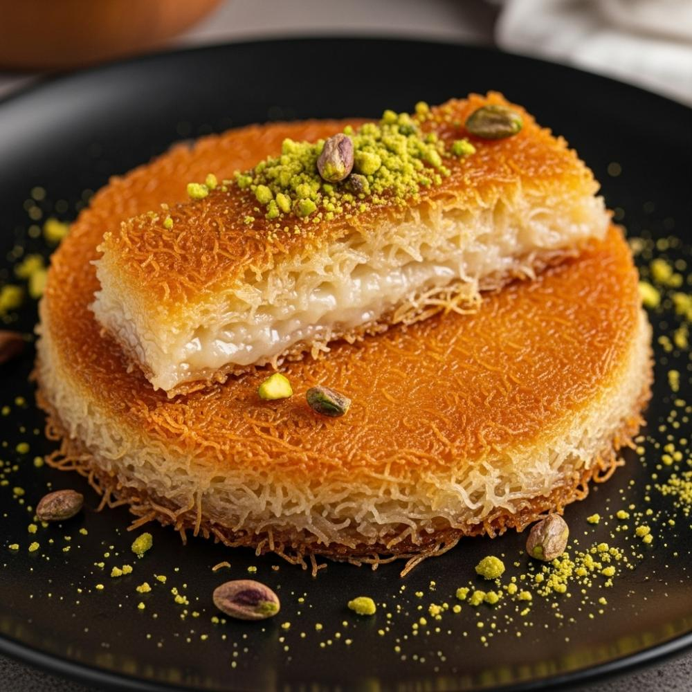

This recipe and image are property of TheRandomRecipe. You can find the original here.
A golden, crispy Middle Eastern dessert with a gooey, warm cheese filling, all soaked in a fragrant sweet syrup. This delightful treat is perfect for two people.
In a small saucepan, combine 1 cup granulated sugar and 1/2 cup water. Heat over medium heat, stirring gently until the sugar dissolves. Bring the mixture to a boil, then reduce the heat to low and let it simmer (cook gently just below boiling, with small bubbles) for 5-7 minutes without stirring. This will make a thin syrup. Take it off the heat and stir in 1 teaspoon lemon juice and 1/2 teaspoon orange blossom water or rose water. Let the syrup cool completely to room temperature. The syrup should be cold when it is poured over the hot kunafeh.
Estimated time: 10 minutes (active) + 30 minutes (inactive cooling)
If using a salty cheese like traditional Nabulsi or Akkawi, cut it into thin slices or small pieces and soak it in cold water for at least 30 minutes, changing the water every 10 minutes, to remove excess salt. Squeeze the cheese very dry to remove all water. If using mozzarella, simply shred it. Mix the shredded or crumbled cheese with 1 tablespoon semolina flour. The semolina helps absorb extra moisture from the cheese during baking.
Estimated time: 5 minutes (active) + 30 minutes (inactive desalting)
If your kataifi pastry is frozen, thaw it completely. Place 6 ounces kataifi pastry in a large bowl. Use your hands to pull the strands apart, separating them into smaller pieces until the dough is finely shredded. Pour 1/2 cup melted unsalted butter over the shredded kataifi. If using, mix 1/4 teaspoon orange food coloring with 1 teaspoon melted butter and add it to the kataifi as well. Use your hands to rub the butter into the pastry until all the strands are evenly coated. This step is crucial for crispiness and color.
Estimated time: 10 minutes
Generously grease a small (about 8-inch round) oven-safe pan or skillet with extra melted butter. Spread half of the buttered kataifi pastry evenly over the bottom of the pan, pressing it down firmly to form a compact layer. Spread the prepared cheese mixture over the kataifi, leaving about a 1/2-inch border around the edges. This helps prevent the cheese from burning or sticking to the pan sides. Cover the cheese with the remaining kataifi pastry, gently pressing it down to create a top layer.
Estimated time: 5 minutes
Preheat your oven to 375°F (190°C). Bake the kunafeh in the preheated oven for 25-30 minutes, or until the top and sides are golden brown and crispy. The cheese should be melted and gooey. For extra crispiness and color on top, you can broil (cook under a top heating element) for the last 1-2 minutes, watching very closely to prevent burning.
Estimated time: 25-30 minutes
Once baked, immediately take the kunafeh out of the oven. Place a serving platter upside down over the top of the pan. Holding the pan and platter firmly together, carefully and quickly flip them over to unmold the kunafeh onto the platter. Gently lift the pan away. Immediately pour the cooled sweet syrup evenly over the hot kunafeh. You will hear a sizzle as it soaks in. Garnish with 2 tablespoons crushed pistachios. Cut into wedges and serve warm.
Estimated time: 1 minute